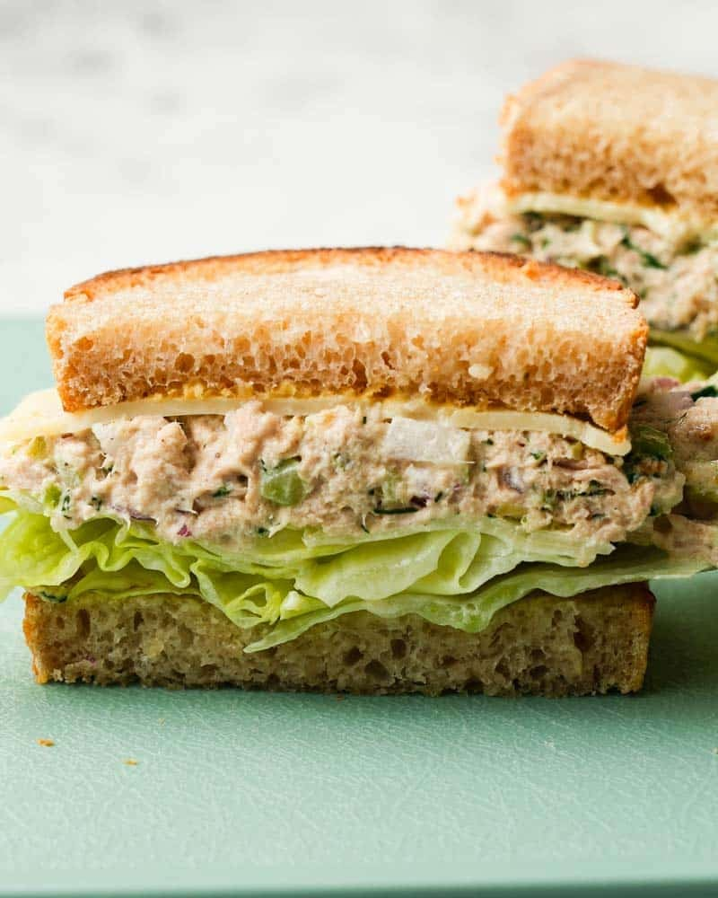

Tuna Sandwich Recipe

Description
This tuna sandwich is a quick and easy meal that's perfect for lunch or a light dinner. It's packed with protein and flavor!
Ingredients
- 1 can of tuna in oil
- 2 cans of tuna in water
- 4 tbsp of Mayonnaise
- 2 heads of onion (diced)
- Garlic powder
- Salt and Pepper
- Liquid Seasoning
Directions
- Open the 2 cans of tuna in water and make sure to drain them and then set aside.
- Open the tuna in oil and then drain partially but keep most of the juice.
- Mix both tuna together in a bowl.
- Now add the diced onion to your bowl as well.
- Add in our mayonnaise.
- Make sure to mix everything and add our salt and pepper gradually.
- Add in our garlic powder and liquid seasoning to taste.
Back